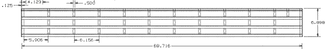
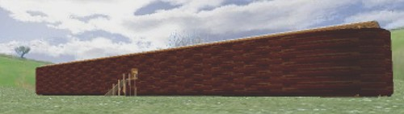

The Bible gives the dimensions, the number of floors, the mention of a window and a door. Now it's up to us to interpret the rest. Cages, walkways, food storage, ramps and railings. There is no way to hide these issues when you build a model, so here is Noah's ark according to...
Rod Walsh. Geelong - near Melbourne Australia.
Joe O'Connell. Indiana USA.
Daniel R McLarty. Connecticut USA.
Allen Magnuson. Texus USA
Scott Campbell. Indianapolis USA

Tim Skillman. Seychelles, Indian Ocean. (VRML model)

Rob Slabach. USA